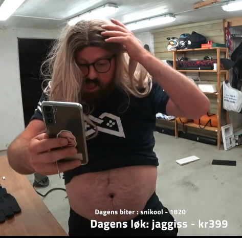
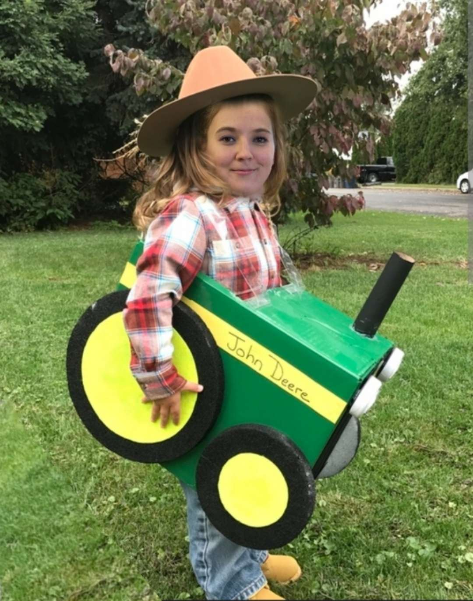

RubenGKS
Treningsansvarlig
Diettansvarlig
Paprikaansvarlig
Vakker uten skjegg
Treningsinfluencer (møtte fan på treningssenter 11.12.2023)

CharlieTheDoggo
Gravitasjonsansvarlig
Godteri-influencer
Eple-entusiast
Treningshater (ble gravid, glemte å trene, 11.12.2023)
Dragracer siden 2009 (kilde:
Dragracing.eu), 18.01.2024
Døpt i Orkanger (kilde:
kirken.no), 18.01.2024
Våre fans
Vi har fans over hele landet og de elsker contentet som strømmer hver dag på direktesendingen fra huset
Vårt slagord
Telia er svensk